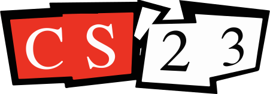

Education
California Institute of Technology
Graduation
2023
Major
Computer Science
Interests
Systems Engineering
Compilers & Tooling
Machine Learning
Infrastructure

Current
Pure Storage
Incoming Software Engineer
Starting Date
August 2023
Past Experiences
Software Engineer Intern
Green Hills Software (2022)
Software Engineer Intern
SprintRay Inc. (2021)
Head TA (CS24)
Caltech (2021–2023)
Teaching Assistant (CS3)
Caltech (2021–2022)
Undergraduate Researcher
Caltech (2020)

Currently Working On